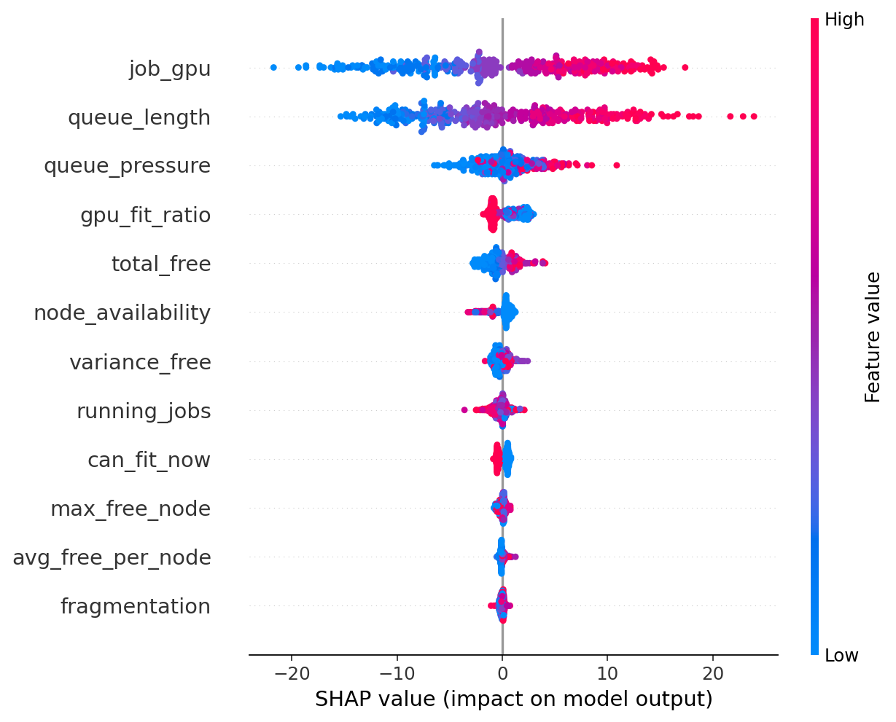
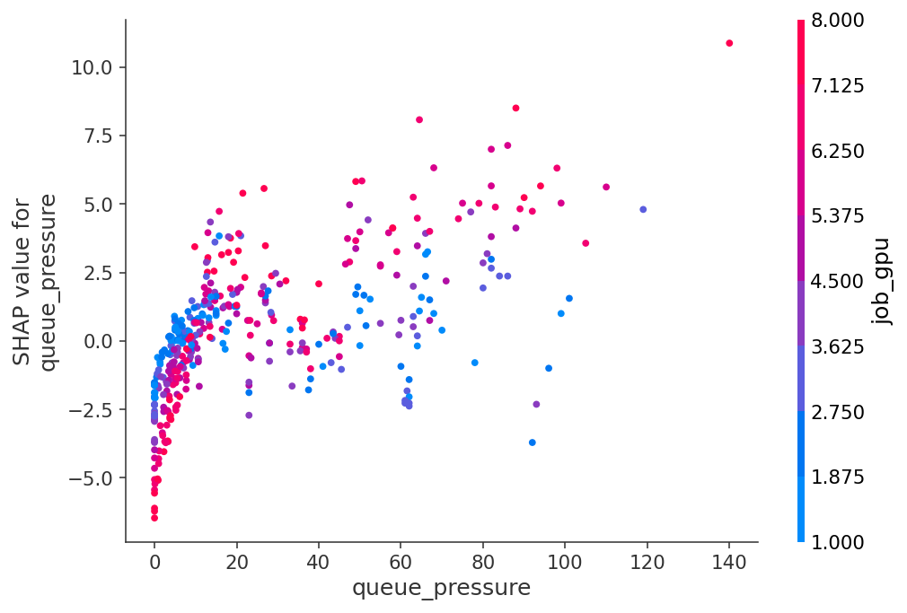
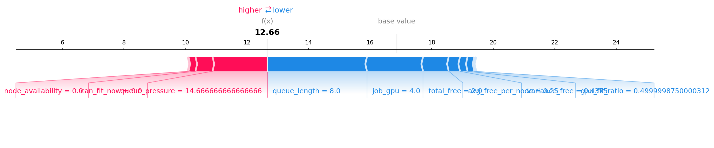

Proactive Feasibility Scheduler
A simulation-driven research project that trains a machine-learning model to predict how long each GPU job will wait in a cluster queue — then reorders the queue by those predictions to cut average waiting time. Every number on this page was regenerated by the project's seeded, one-command pipeline and is bit-for-bit reproducible.
What this project is
Shared GPU clusters — the machines that train neural networks in universities, labs, and clouds — make jobs wait in a queue when all GPUs are busy. The order in which the queue is served decides how long everyone waits. This project asks one precise question:
The project answers it end-to-end with five building blocks, each of which lives in its own numbered folder:
🖥️ 1 · A cluster simulator 01_simulation
A small, transparent discrete-time simulator: 8 nodes × 4 GPUs, jobs arrive randomly needing 1–8 GPUs for 5–20 time-steps. It reproduces the essential physics of queueing — contention, fragmentation, waiting.
📊 2 · Datasets 02_data
The simulator snapshots 12 cluster-state features at each job's arrival and records how long that job actually waited — producing 2,200 labelled training examples per generation run (seeded, deterministic).
🧠 3 · Wait-time models 03_models
An XGBoost regressor learns arrival features → wait time (holdout R² 0.84). Seven model families are compared; ablation, SHAP explainability, tuning, online learning and drift detection round out the model science.
⚖️ 4 · Schedulers 04_scheduler
Five queue policies — FIFO, SJF, Priority, a neural-network reranker, and the Proactive (XGBoost) reranker — compete in paired, seeded benchmarks with full statistical treatment.
📈 5 · Results & analyses 05_results · phases_22_30
Forty-run paired benchmarks with bootstrap confidence intervals, fairness and starvation analysis, scaling studies, out-of-distribution stress tests, ROI estimates, and a LaTeX manuscript draft.
🔁 Reproducibility run_all_experiments.sh
One command regenerates everything — dataset → model → every table and figure — deterministically (seeded), on Windows, Linux, or macOS, locally or in Docker.
The honest one-paragraph summary
The proactive scheduler works, modestly: it cuts mean waiting time by 7.7% versus FIFO with high statistical confidence, without hurting GPU utilisation. But the gain is a trade-off, not a free lunch: the longest-waiting jobs wait about twice as long (favouring easy-to-place jobs starves awkward ones), per-job fairness worsens, the model's accuracy collapses on workloads unlike its training distribution, and validation on real cluster traces remains open. The project's most distinctive strength is that it measures and reports all of this honestly — with a fully reproducible harness that anyone can rerun.
The problem, explained from scratch
What is a GPU cluster?
A GPU cluster is a set of computers ("nodes"), each containing several graphics processing units. Deep-learning training jobs request some number of GPUs (here 1–8) for some duration. A central scheduler decides which queued job starts next whenever GPUs free up.
Why jobs wait
When demand exceeds free GPUs, jobs queue. Two effects make waiting times hard to predict:
- Contention — many jobs competing for few GPUs. The queue drains only as fast as running jobs finish.
- Fragmentation — free GPUs scattered across nodes. 8 free GPUs spread 1-per-node cannot serve one 8-GPU job if placement is constrained, and even with flexible placement, uneven free capacity changes what can start now.
The classical schedulers (the baselines)
| Policy | Rule | Strength | Weakness |
|---|---|---|---|
| FIFO | First come, first served | Simple, predictable, fair — nobody is skipped | A hard-to-place job at the head blocks everyone (head-of-line blocking) |
| SJF | Shortest job first | Provably minimises mean wait… | …but needs to know each job's runtime in advance, which real clusters don't; starves long jobs |
| Priority + aging | Order by priority score, boosted with waiting time | Expresses business importance; aging prevents starvation | Priorities are manual; doesn't model cluster state |
| Backfill (SLURM-style) | Let small jobs jump ahead if they don't delay the head job | Industry standard; big utilisation gains | Needs runtime estimates; not implemented here yet (future scope) |
The idea being tested
None of the classical policies look at the cluster's live state. This project's hypothesis: the pattern "jobs like this, arriving into cluster states like this, tend to wait about this long" is learnable. If so, sorting the queue by predicted wait approximates SJF's benefit without needing runtime oracles — the model only sees what the cluster already knows at arrival time.
System architecture
The whole project is a straight-line data flow: simulate → featurize → train → schedule → benchmark → analyse. Each arrow below is one or more scripts in the repository.
Two design choices matter most: (1) paired benchmarking — every scheduler sees the identical randomly-generated job set in each run, so differences come from policy, not luck; and (2) leak-free features — an earlier feature (smaller_jobs_in_queue) was removed because it encoded the FIFO queue's own ordering (82% importance = the model was reading the answer off the baseline scheduler); the 12 surviving features describe only the physical cluster state.
The cluster simulator
Everything rests on a deliberately small discrete-time simulator (~140 lines, no dependencies beyond NumPy). Its transparency is a feature: every result can be traced to mechanics you can read in one sitting.
The world model
- Cluster: 8 nodes × 4 GPUs = 32 GPUs (scaling studies vary this 8→256 GPUs).
- Jobs: 110 per run; arrival uniform in ts 0–150; GPUs needed uniform 1–8; runtime uniform 5–20 ts.
- Clock: 300 discrete time-steps per run. Each tick: release finished jobs → enqueue arrivals → dispatch whatever fits.
- Allocation: greedy first-fit across nodes; a job may span nodes; failed partial allocations roll back.
- Determinism: seeded (global 42, per-run 42+i) — identical datasets and results on every machine.
Dispatch loop (each time-step t)
for job in running: # 1. release
if job.end_time == t:
cluster.release(job)
for job in arrivals_at(t): # 2. arrivals
job.features = snapshot() # ← dataset rows
queue.append(job)
order_queue() # 3. policy hook
for job in queue: # 4. dispatch ALL
if fits(job): # that fit
allocate(job, t)Step 3 is the only thing that differs between schedulers — FIFO leaves the queue alone; Proactive sorts it by predicted wait.
The resulting workload is genuinely contended: the regenerated training dataset has mean wait 16.4 ts (σ 16.2, max 73), and 25% of jobs start within 2 ts — a wide, skewed target worth predicting.
The 12 cluster-state features
When a job arrives, the simulator photographs the cluster from that job's point of view. Each feature answers an operator's instinctive question. All are computable in any real scheduler at decision time — no future information, no oracle runtimes.
| # | Feature | Formula | The question it answers |
|---|---|---|---|
| 1 | job_gpu | job.num_gpus | How big is this job? (Big jobs are hard to place.) |
| 2 | total_free | Σ free(node) | How much total capacity is free right now? |
| 3 | queue_length | len(queue) | How many jobs are already ahead? |
| 4 | running_jobs | len(running) | How busy is the cluster? |
| 5 | max_free_node | max(free per node) | What's the biggest contiguous slot? |
| 6 | variance_free | Var(free per node) | How uneven is free capacity? |
| 7 | can_fit_now | 𝟙[total_free ≥ job_gpu] | Could it start immediately? |
| 8 | gpu_fit_ratio | min(total_free/job_gpu, 1) | What fraction of the demand is available? |
| 9 | fragmentation | Std(free per node) | How scattered is the free capacity? |
| 10 | queue_pressure | Σ queued GPUs / (total_free+1) | How much demand is stacked against supply? |
| 11 | node_availability | |{n: free(n) ≥ job_gpu}| / N | What share of nodes could host it alone? |
| 12 | avg_free_per_node | total_free / N | What's the average free capacity per node? |
smaller_jobs_in_queue — the count of queued jobs smaller than this one. It carried 82% of the model's importance… because under FIFO it directly encodes queue rank, which nearly is the wait time. That's data leakage: the model was reading the baseline scheduler's answer, not learning cluster physics. It was removed; the honest model is harder to fit and more transferable.
job_gpu costs 0.20 R²; dropping queue_pressure or queue_length costs ~0.02–0.03 each; every other single feature is nearly redundant given the rest.The ML model: predicting wait time
The production model (03_models/wait_model_v2.pkl) is an XGBoost regressor — 300 gradient-boosted trees, depth 6, learning rate 0.05, subsample 0.8 — trained on 1,760 examples and evaluated on a held-out 440. Gradient-boosted trees suit this problem: tabular features, non-linear interactions (job size × fragmentation), tiny training budget, millisecond inference.
Evaluated honestly
Behaviour across load regimes
Three synthetic contention profiles probe where the model is trustworthy (regenerated after the audit fixed a degenerate all-zero-wait profile):
| Profile | Samples | MAE (ts) | R² | Reading |
|---|---|---|---|---|
| Low contention | 2,200 | 0.20 | 0.80 | Waits are tiny and mostly zero; small absolute errors |
| High contention | 2,200 | 13.08 | 0.91 | Strong signal — congestion is predictable |
| Mixed / bursty | 2,200 | 1.28 | 0.67 | Hardest regime: burst timing is the noise |
The proactive scheduler
The scheduler itself is almost embarrassingly simple — which is the point. All intelligence lives in the model; the policy is a sort.
Algorithm (each time-step)
1. release finished jobs
2. append newly-arrived jobs to queue
3. for each queued job j:
ŵ(j) ← model.predict(features(j))
4. queue.sort(key = ŵ) # shortest
# predicted
# wait first
5. for j in queue: # dispatch ALL
if total_free ≥ j.gpus: # that fit this
allocate(j) # tickWhy it can beat FIFO
Sorting by predicted wait is a learned approximation of "easiest to serve first". Jobs the cluster can absorb quickly stop blocking the queue; the average job waits less. Utilisation is untouched because step 5 dispatches everything that fits either way — only the order changes.
Why it isn't free
The same preference systematically defers big, awkward jobs — exactly the mechanism that doubles tail latency and worsens fairness (measured below). An anti-starvation variant bumps any job waiting > 3× the mean to the queue head.
proactive_scheduler.py) had a stray break that let the proactive variant start only one job per tick while FIFO started many — throttling the proactive side's throughput in that early experiment. v2 fixed the loop; the audit also repaired v1 for provenance. All headline numbers come from the correct dispatch-all logic.
Watch it run — live in your browser
This is not a video. Below, two copies of the project's simulator run the identical randomly-generated job stream — the left queue served in arrival order (FIFO), the right queue re-sorted every tick by a wait-time model. Each colored chip is a job (same job = same color on both sides); each small cell is one GPU across the 8×4 cluster.
FIFO baseline
Proactive distilled XGBoost
Mechanics identical to 04_scheduler/proactive_Schedule_v2.py: release finished jobs → enqueue arrivals → (right side only) score & sort → dispatch every job that fits. 110 jobs, 300 ticks, jobs need 1–8 GPUs for 5–20 ticks. Utilisation stays identical on both sides — only the order (and therefore who waits) changes.
Headline results
The 40-run paired benchmark
Forty seeded runs; in each, the same 110 jobs go through FIFO and through Proactive. The paired design cancels workload luck — only the policy differs.
Five schedulers, head to head
Twenty paired runs through five policies (Proactive highlighted; note what each column costs):
Throughput (0.367 jobs/ts) and GPU utilisation (63.6%) are identical for all five schedulers — with this workload everything completes within the horizon; the policies differ only in who waits.
The trade-offs, quantified
The fairness analysis (20 runs, per-job records) makes the cost explicit and tests a mitigation — anti-starvation bumping: any job waiting more than 3× the current mean is forced to the queue head.
| Metric (20 runs) | FIFO | Proactive | + Anti-starvation |
|---|---|---|---|
| Mean wait (ts) | 18.58 | 16.54 | 16.46 |
| Max wait (ts) | 57.9 | 124.8 | 87.2 |
| Per-job Gini | 0.526 | 0.796 | 0.688 |
| Starved jobs (wait > 3× mean) | 22.3 | 18.2 | 30.2 |
| SLA compliance score (phase 27) | 0.933 | 0.945 | 0.863 |
| Run-level Jain index (40 runs) | 0.918 | 0.922 | — |
Robustness: scale, distribution shift, drift
Where the benefit lives: contention
Out-of-distribution: where the model breaks
Phase 23 retests the trained model on 72 freshly-simulated scenarios that shift arrival rate (0.5–2×), cluster size (4–32 nodes), and job-size mix. This is the project's most sobering — and most valuable — result:
Drift detection & online learning
Concept-drift trigger phase 18
A rolling-MAE monitor (window 50) streams 880 predictions with a distribution shift injected at 70%. The trigger (MAE > 1.5× baseline) fires 7 times, exactly in the drifted region — the retraining signal a production deployment would use.
Online retraining phase 17
An SGD regressor updated incrementally on the drifted stream improves MAE 6.98 → 6.88 and R² 0.694 → 0.704 vs a frozen model — a modest but real recovery, and the mechanism that closes the loop with the drift trigger.
The proxy-trace result (read carefully)
The file 02_data/lanl_trace_sample.csv was previously presented as a real LANL supercomputer trace. The 2026 audit proved it is synthetic — regenerating the loader's fallback path reproduces it row-for-row (it is the training distribution with waits scaled by 1.15). Scored against even this schema-matched proxy, the model transfers with R² ≈ 0.015 (MAE ≈ 15 ts vs holdout 4.7). Transfer to genuinely real traces can only be harder. The loader now parses real SWF files correctly (an off-by-one in the field mapping was also fixed), falls back loudly, labels everything synthetic_proxy_trace, and documents where to download real traces. Closing this gap is future-scope item #1.
Explainability (SHAP)
SHAP (SHapley Additive exPlanations) attributes each individual prediction to feature contributions — the difference between "the model said 12 ts" and "the model said 12 ts because the queue is long and only one node could host this job". The pipeline regenerates 16 SHAP figures into 05_results/shap/:
- Global summary (
shap_summary.png) — feature impact ranked across 400 sampled predictions; agrees with the importance chart above (job size and queue state dominate). - 12 dependence plots — how each feature's value moves predictions, exposing the learned non-linearities (e.g.,
queue_pressurematters only oncecan_fit_nowis 0). - 3 force plots — single-prediction anatomies, the artifact you'd show an operator asking "why was my job predicted to wait?"



(Images resolve when this page is opened from docs/ inside the repository.)
ROI estimate — clearly labelled as an estimate
Phase 19 converts the measured 7.7% mean-wait improvement into money under explicit assumptions (180,000 jobs/yr, 2.5 GPU-hr average job, $2.20/GPU-hr cloud rate, 0.35 kWh/GPU-hr at $0.14/kWh, $42k deployment cost):
The linear wait→GPU-hour conversion is generous (queued jobs don't burn GPUs; the true saving is in time-to-result and capacity deferral). Treat this as an order-of-magnitude illustration; 05_results/roi_analysis.py recomputes it with your own rates.
Every file, explained
The repository is organised as a numbered pipeline — data flows from 01_ to 05_, with later research phases in phases_22_30/ and superseded experiments preserved in 07_archive/.
01_simulation — the simulator
| File | What it does | Outputs |
|---|---|---|
minimal_gpu_cluster.py | The original proof-of-concept FIFO simulator: Job/Cluster classes, greedy multi-node allocation with rollback, utilisation tracking. Everything else in the project descends from this file. | console metrics |
dataset_minimal_gpu_cluster.py | Same simulator instrumented to snapshot 6 features per arrival and emit a binary "will it start within Δt?" classification dataset — the project's first ML formulation, later superseded by wait-time regression. | 02_data/dataset.csv |
02_data — datasets & traces
| File | What it does | Outputs |
|---|---|---|
generate_improved_dataset.py | The canonical generator (pipeline step 0): 20 seeded simulation runs, 12 leak-free features per arrival, continuous wait-time label. | improved_wait_dataset.csv (2,200 × 13) |
generate_load_profiles.py | Three contention profiles (low/high/mixed-bursty) + per-profile XGBoost evaluation; guards against zero-variance targets (audit fix). | 3 profile CSVs + performance CSV |
generate_large_dataset.py | Legacy generator for the v1 dataset; feature formulas aligned to canonical definitions by the audit. | wait_dataset.csv (legacy) |
load_real_traces.py | Standard Workload Format (SWF) parser for real HPC traces (field mapping fixed by audit) with a loud, honestly-labelled synthetic fallback when no trace file exists. | lanl_trace_sample.csv |
synthetic_vs_real_comparison.py | Scores the trained model on the synthetic holdout vs the (proxy) trace — the sim-to-real gap measurement. Split-before-fit bug fixed by audit. | 05_results/traces/* |
| CSVs | improved_wait_dataset.csv (canonical training data) · wait_dataset.csv/large_dataset.csv/dataset.csv (legacy) · 3 load-profile CSVs · lanl_trace_sample.csv (synthetic proxy) | — |
03_models — model science
| File | What it does | Outputs |
|---|---|---|
train_improved_model.py | Trains the production model: XGBoost on the 12 features, honest holdout + 5-fold CV, importance plot. | wait_model_v2.pkl (model + feature list) |
compare_multiple_models.py | Table 1: seven regressors (LR, RF, LightGBM, CatBoost, sklearn GB, MLP, XGBoost) on identical splits. | model_comparison_table1.csv |
ablation_study.py | Leave-one-feature-out: retrains 13 times, ranks features by R² drop. | ablation_study_results.csv + plot |
explainability_shap.py | SHAP summary, 12 dependence plots, 3 force plots. | 05_results/shap/ (16 PNGs) |
tune_xgboost.py | GridSearchCV over 243 configs × 3 folds (729 fits); baseline vs tuned. | xgboost_tuning_results.csv |
online_learning.py | Incremental SGD on a drifted stream vs frozen model. | online_learning_results.csv |
concept_drift_detection.py | Rolling-MAE drift monitor with retraining triggers on an 880-sample stream. | concept_drift_results.csv + plot |
train_wait_model.py · train_model_withxg.py | Legacy v1 regression trainer and the early feasibility-classification comparison (LogReg/RF/XGB). Path bugs fixed by audit; kept as history. | legacy model / console |
04_scheduler — policies & benchmarks
| File | What it does | Outputs |
|---|---|---|
proactive_Schedule_v2.py | The headline experiment: 10 paired runs FIFO vs model-reordered queue, dispatch-all-that-fit semantics. | console |
benchmark_statistical.py | The statistical benchmark: 40 seeded paired runs, paired t-test, Wilcoxon, 95% CIs. | benchmark_statistical_{results,summary}.csv |
multi_scheduler_benchmark.py | FIFO vs SJF vs Priority vs NN vs Proactive on identical workloads; wait/tail/Gini/throughput/utilisation (+ honest pred_wait_mae for the two predictor policies). | schedulers/multi_scheduler_benchmark.csv + plot |
fairness_analysis.py | FIFO vs Proactive vs anti-starvation variant: Gini, starvation counts, per-size breakdowns (per-size chart de-faked by audit). | fairness/* |
scaling_analysis.py | Wait advantage + scheduling overhead at 8→256 GPUs. | scaling/scaling_analysis.csv + plot |
sensitivity_analysis.py | Model quality across 8 shifted scenarios (the precursor to phase 23). | sensitivity_analysis_results.csv |
sjf_scheduler.py · priority_scheduler.py · neural_network_scheduler.py | Importable policy helpers (SJF sort, priority+aging, MLP reranker). | — |
proactive_scheduler.py | v1 of the experiment (one-job-per-tick bug fixed by audit; superseded by v2, kept for provenance). | console |
05_results — generated artifacts
Everything here is output — regenerated by the pipeline, safe to delete. Organised by analysis: models/ (ablation, drift, online learning), schedulers/, fairness/, scaling/, shap/, traces/, roi/, plus top-level headline figures. Two scripts live here: benchmark_and_plot.py (10-run benchmark + publication plots) and roi_analysis.py (cost-benefit; long-format parser fixed by audit).
phases_22_30 — advanced validation & publication
| Phase | File | What it does now (post-audit) |
|---|---|---|
| 22 | stats_bootstrap.py | Bootstrap 95% CIs + BH-corrected paired tests on the real 40-run benchmark; zero-variance comparisons honestly reported "n/a". |
| 23 | sensitivity_ood_analysis.py | 72-scenario OOD stress test — now scores the real trained model on real shifted simulations (previously a silent heuristic stand-in). |
| 24 | scheduler_comparison.py | Scheduler-landscape comparison from real benchmark CSVs (fabricated SLURM/K8s/Yarn constants removed); writes a data-derived novelty statement. |
| 25 | trace_preprocessing.py | Real-trace ingestion scaffold; falls back loudly to labelled synthetic proxies, with download instructions for LANL/Alibaba traces. |
| 26 | scaling_benchmark.py | Saturation stress test at 32–256 GPUs with real queue simulation and real model-inference timing (fabricated wait formula replaced). |
| 27 | fairness_sla_analysis.py | Gini/Jain/SLA computed from real per-run and per-job data; schedulers without real data dropped and listed. |
| 28 | manuscript.tex | LaTeX draft — compiles cleanly, all citations resolve, and every number matches the regenerated artifacts (including the trade-offs). |
| 29 | run_all_experiments_v2.sh | Phases 22–27 driver with logging; UTF-8-safe, path-correct. |
| 30 | ../DEPLOYMENT.md | Operations runbook: preconditions, shadow→advisory→active rollout, monitoring thresholds, drift response, rollback. |
Root files
| File | Role |
|---|---|
run_all_experiments.sh | The one-command pipeline (12 steps, ordering fixed by audit, exports PYTHONUTF8=1). |
dashboard.py | Streamlit explorer: renders every result CSV as a table and browses SHAP images. streamlit run dashboard.py. |
Dockerfile · requirements.txt | Container reproduction; pins verified working on Python 3.14 (audit re-pinned all versions and added missing seaborn/joblib). |
README.md · RESULTS.md · METHODOLOGY.md · README_REPRODUCIBILITY.md · DEPLOYMENT.md | Project docs — all synced to the regenerated honest numbers. |
07_archive/ | v1 feasibility classifiers, v1 wait model, early sanity checks — headers now mark them ARCHIVED and name their successors; paths fixed so they still run. |
Reproducibility pipeline
One command rebuilds the entire evidence chain from a clean checkout — bash run_all_experiments.sh:
Then bash phases_22_30/run_all_experiments_v2.sh runs the phase 22–27 analyses against those artifacts. Both scripts are seeded, cwd-independent, and UTF-8-safe on Windows. Docker: docker build -t proactive-scheduler . && docker run --rm proactive-scheduler.
The 30 research phases
The project evolved through 30 tracked phases — from a toy simulator to a publication-grade package. Condensed status (details in phases_22_30/PHASES_ROADMAP.md):
| Phases | Theme | Delivered | Status |
|---|---|---|---|
| 01–05 | Foundations | Simulator; feasibility classification (v1 ML formulation); first datasets | done |
| 06–09 | Pivot to regression | Wait-time prediction; leak removal; 12-feature schema; v2 model; proactive scheduler v1→v2 | done |
| 10–15 | Model science | Multi-model Table 1; tuning; ablation; fairness analysis; 5-scheduler benchmark; SHAP | done |
| 16–21 | Robustness & ops | Trace scaffolding; scaling; online learning; drift detection; ROI; dashboard + reproducibility kit | done |
| 22 | Statistical rigor | Bootstrap CIs, BH-corrected paired tests on the 40-run benchmark | done |
| 23 | OOD robustness | 72-scenario domain-shift stress test of the real model | done |
| 24 | Scheduler landscape | Comparison vs real implementations (fabricated industry baselines removed) | done |
| 25 | Real traces | SWF parser + preprocessing scaffold; no real trace evaluated yet | open |
| 26 | Scaling validation | Saturation stress test 32–256 GPUs, real inference timing | done |
| 27 | Fairness & SLA | Gini/Jain/SLA from real distributions; trade-off quantified (not claimed away) | done |
| 28 | Manuscript | LaTeX draft, numbers synced to regenerated artifacts | draft |
| 29 | Reproducibility | Seeded one-command pipelines, Docker, verified pins | done |
| 30 | Deployment guide | DEPLOYMENT.md: rollout modes, monitoring, fallback, rollback | done |
The July 2026 audit & repairs
Before this documentation was written, the entire repository was audited: every file read, every claim adversarially re-verified against the code and data by independent checks, every script executed. 37 defects were confirmed and all 37 were fixed; 6 additional suspected issues were investigated and refuted. A pre-repair backup of the project exists alongside the repository folder.
🔬 Scientific-integrity fixes (the ones that matter)
- Fake "real" trace exposed & relabelled —
lanl_trace_sample.csvproven to be the synthetic fallback (row-for-row reproduction); all docs now say synthetic proxy, and the loader fails loudly. - In-sample "holdout" fixed — a script fit on all data before splitting, inflating R² to 0.96; split-before-fit restores the honest 0.82–0.84.
- Fabricated results removed from four phase scripts — OOD analysis used a heuristic instead of the model; scheduler comparison, scaling, and fairness/SLA used hardcoded constants (zero-variance arrays, invented latencies). All four now compute from real data/simulations.
- Manuscript contradictions corrected — claims of improved fairness (Gini 0.37 vs 0.42) and confirmed sim-to-real generalization contradicted the project's own measurements; now reports the true trade-offs.
- v1 scheduler dispatch bug — a stray
breaklimited proactive to one job/tick in the earliest experiment. - Degenerate experiment repaired — the low-contention profile produced all-zero waits (trivial R² = 1.0); now has real variance plus a zero-variance guard.
🔧 Engineering fixes
- 5 missing dependencies installed & re-pinned (shap, lightgbm, catboost, streamlit, plotly — declared but absent; two pipeline steps could never run).
- Seeded end-to-end — dataset generation was unseeded, so every "reproduction" produced different data. Now deterministic (global 42, per-run 42+i).
- Windows Unicode crashes fixed — cp1252 console encoding crashed three scripts; pipelines export
PYTHONUTF8=1and all writes specify UTF-8. - Path bugs — eight scripts only worked from one working directory; all now resolve paths from their own location.
- Pipeline ordering — ROI ran before the benchmark that produces its input (and silently used a stale wide-format file its parser could never read). Reordered + parser fixed.
- SWF parser off-by-one — requested-processors read from the wrong SWF field (would have corrupted any future real-trace run).
- Docs de-linted — missing
docs/andDEPLOYMENT.mdcreated; stale numbers, dead paths, and unresolved LaTeX citations fixed.
Full verification: main pipeline 12/12 steps green · phases 22–27 green · 8 standalone scripts green · manuscript structurally valid (balanced environments, all citations resolve).
Honest limitations
- No real-workload validation. Everything is synthetic; the one "trace" is a proxy derived from the training distribution, and even it defeats the model (R² ≈ 0.02). This is the wall between the current results and any real-world claim.
- The simulator is minimal. Uniform job sizes/runtimes, single job class, no preemption, no node failures, no placement constraints (jobs span nodes freely), no runtime uncertainty. Real waits have heavier tails and richer structure.
- The effect is modest and noisy. 7.7% mean improvement with σ 8.9 — 7 of 40 runs went the other way. Statistically solid, operationally small.
- Fairness/tail costs are real. Unmitigated, max wait doubles; the anti-starvation patch recovers only part of it and adds its own churn.
- OOD fragility. Mean R² < 0 across shifted regimes means the model, as-is, must not be deployed beyond its training distribution without retraining and a fallback.
- Baseline gap. No backfill (SLURM's actual policy) baseline yet — the comparison flatters proactive by omitting the strongest practical competitor.
- ROI is illustrative. Linear wait→cost conversion; assumption-heavy.
Future scope — a concrete research roadmap
Ordered by scientific leverage per unit of effort. The first tier turns this from a strong coursework project into a publishable paper; the second makes the method competitive; the third is a research program.
Tier 1 — Validity (do these first)
1 · Validate on real traces highest priority
Download 2–3 real workloads — LANL CM-5 / SDSC-SP2 SWF traces from the Parallel Workloads Archive and the Alibaba GPU cluster trace. Replay them through the simulator, retrain per trace, and report within-trace holdout + cross-trace transfer. The SWF parser and preprocessing scaffold are already in place (02_data/load_real_traces.py, phase 25). Every other claim in the project gains or loses credibility with this one experiment.
2 · Implement a real backfill baseline highest priority
EASY/conservative backfilling is what SLURM actually does and the strongest practical competitor. Implement it in the simulator (~100 lines: reserve start for queue head, let jobs that won't delay it jump ahead). If proactive can't beat or complement backfill, that's essential to know; if it can (e.g., predicted-wait-aware backfill), that's the paper's novelty.
3 · Bound the fairness cost principledly
Replace the ad-hoc 3×-mean bump with a hard wait budget: reorder freely subject to no job's predicted start exceeding its FIFO-position start by more than B ts. Sweep B to trace the actual mean-wait ↔ tail-latency Pareto frontier — turning today's weakness into a tunable, publishable result.
4 · Richer, harder workloads
Poisson + diurnal arrivals, heavy-tailed (log-normal) runtimes, mixed job classes, per-node placement constraints, preemption, node failures. The current uniform workload is the easiest possible case for a predictor; credibility requires the hard cases. All generators are seeded — extending them preserves reproducibility.
Tier 2 — Method improvements
5 · Uncertainty-aware scheduling
Swap point predictions for quantile regression (XGBoost reg:quantileerror, or NGBoost/conformal intervals). Schedule on an upper-confidence wait; auto-fallback to FIFO when intervals blow out. This directly addresses the OOD fragility with the model's own uncertainty signal.
6 · Smarter scoring than "sort by ŵ"
Sorting by predicted wait conflates "easy to place" with "should go first". Try impact-aware scores — ŵ × requested GPUs (delay-cost), aging-weighted ŵ, or expected-slowdown (ŵ / runtime estimate) — and compare against SJF given predicted (not oracle) runtimes for a fair fight.
7 · Close the online-learning loop
Drift detection (7 correct triggers) and online retraining (MAE 6.98→6.88) exist as separate experiments. Wire them into the scheduler: drift trigger → FIFO fallback → incremental retrain → shadow-validate → re-promote. That's the production story DEPLOYMENT.md describes — implement and measure it.
8 · Engineering hardening
Make it a git repo with CI (the audit found no version control). Extract the copy-pasted Job/Cluster/simulation code (10 near-duplicates) into a shared simlib/ package with unit tests; add a config file for cluster/workload parameters; property-based tests for the allocator (allocation+rollback invariants).
Tier 3 — Research program
9 · Learned-policy comparison
Position against reinforcement-learning schedulers (Decima-style graph-NN + policy gradient). Hypothesis worth testing: the XGBoost reranker gets most of the benefit at a fraction of the training cost and with far better explainability — a valuable negative/efficiency result either way.
10 · Multi-objective optimization
Optimize wait + fairness + energy jointly (constrained optimization or scalarization sweeps); report Pareto fronts rather than single points. The fairness budget from item 3 is the natural first axis; carbon-aware scheduling (shift flexible jobs to low-carbon hours) is the third.
11 · Shadow deployment study
Run the DEPLOYMENT.md shadow-mode protocol on a real (even small) SLURM cluster: log features + realized waits for a term, retrain, and report the real-data holdout R². This single number — the real-world analogue of 0.84 — would anchor the whole research line.
12 · Publication path
With Tier 1 done: a workshop paper (JSSPP — the scheduling workshop whose literature this project already cites — or an SC/HPDC workshop) framed around the honest trade-off study: "what wait-prediction reordering buys, what it costs, and when it breaks". The reproducibility kit is already artifact-evaluation-grade.
Glossary
| Discrete-time simulation | Time advances in integer steps; at each step the system releases finished jobs, admits arrivals, and dispatches what fits. Simple, transparent, and sufficient for queueing dynamics. |
| FIFO | First-In, First-Out — serve jobs strictly in arrival order. The fairness gold standard and the universal baseline. |
| SJF | Shortest-Job-First — provably optimal for mean wait, but requires knowing runtimes in advance and starves long jobs. |
| Backfilling | Letting small jobs jump the queue when they won't delay the reserved start of the job at the head. SLURM's production policy. |
| XGBoost | A gradient-boosted decision-tree library: builds hundreds of small trees, each correcting the previous ensemble's errors. State of the art for tabular data at this scale. |
| R² | Coefficient of determination — the fraction of target variance explained. 1 = perfect; 0 = no better than predicting the mean; negative = worse than that. |
| MAE | Mean Absolute Error — average |prediction − truth|, here in time-steps. Robust and directly interpretable. |
| Holdout / cross-validation | Evaluating on data the model never saw (a held-out 20%, or 5 rotating folds). The only honest measure of generalisation. |
| Data leakage | A feature that encodes the answer (here: queue rank under FIFO ≈ wait time). Produces spectacular, meaningless accuracy. |
| Paired benchmark | Both schedulers process the same job sets; differences per run are attributable to policy alone. Enables paired statistical tests. |
| Paired t-test / Wilcoxon | Significance tests on paired differences (parametric / rank-based). Small p ⇒ the improvement is unlikely to be luck. |
| Bootstrap CI | Confidence interval built by resampling the observed runs thousands of times — no normality assumption. |
| Gini coefficient | Inequality measure applied to waits: 0 = everyone waits equally; higher = waiting concentrated on few jobs. |
| Jain's fairness index | Alternative fairness measure (1 = perfectly fair, 1/n = one job takes everything). |
| Starvation | A job waiting far beyond typical (here: > 3× mean wait). Reordering policies risk it structurally. |
| OOD (out-of-distribution) | Conditions unlike the training data (different arrival rates, cluster sizes, job mixes). Where ML models quietly fail. |
| Concept drift | The world changing under a deployed model. Detected here by rolling prediction error crossing a threshold. |
| SHAP | Game-theoretic attribution of each prediction to feature contributions — local and global explainability. |
| SWF | Standard Workload Format — the archive format for real HPC traces (one job per line, 18 fields). |
| ts (time-step) | The simulator's clock unit. All waits/runtimes are in ts; absolute wall-clock meaning depends on how a real deployment maps it. |